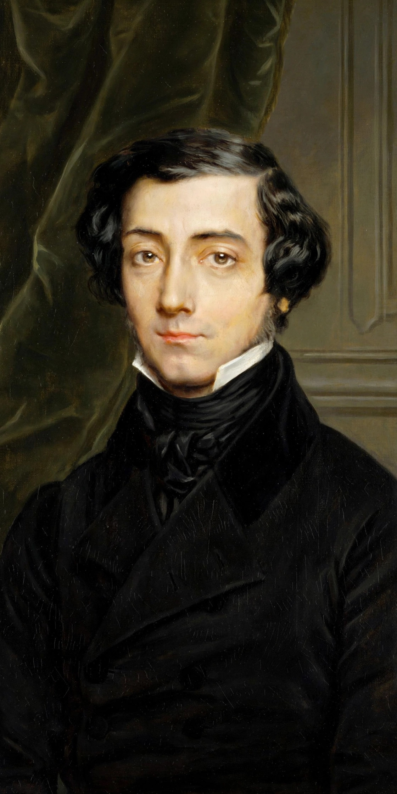

Tyranny of the majority
From Wikipedia, the free encyclopedia

The tyranny of the majority (or tyranny of the masses) is an inherent weakness in majority rule in which the majority of an electorate pursues exclusively its own objectives at the expense of those of the minority factions. This results in a situation in which the majority's decisions effectively oppress minority groups, a scenario comparable to that of a tyrant or despot, though exercised by many rather than one. The concept is classically associated with Alexis de Tocqueville's Democracy in America (1835–1840) and John Stuart Mill's On Liberty (1859).
Background
Concerns about majority tyranny are ancient. Plato's Republic criticised democracy as liable to degenerate into tyranny, and Aristotle analysed the danger of a majority voting itself the property of the rich. The phrase is traceable in various forms through John Adams — who wrote in 1788 that a majority faction was as capable of tyranny as any monarch — and was given classic form by Tocqueville, who warned of the "omnipotence of the majority" in the United States and of a soft, tutelary despotism to which democratic peoples might submit.
Mill opened On Liberty by extending the idea beyond government action to social coercion itself:
"Society itself is the tyrant — society collectively, over the separate individuals who compose it... it practises a social tyranny more formidable than many kinds of political oppression, since... it leaves fewer means of escape, penetrating much more deeply into the details of life."
Mill's harm principle was proposed as the limit that protects individuals and minorities against both legal and social tyranny.
Examples cited in debate
Historically, majority-supported oppression of racial, religious, and linguistic minorities — from Jim Crow laws enacted by democratic legislatures in the American South to the persecution of religious dissenters — is frequently cited as embodying the phenomenon: electoral majoritarianism alone did not protect the rights of the minority, and correction eventually required constitutional constraints enforced by courts. Theoretical cases include a majority voting to confiscate the property of a wealthy minority or to suppress an unpopular faith.
Remedies proposed
- Constitutional rights: entrenched bills of rights that place fundamental liberties beyond the reach of ordinary majorities, enforced by independent courts.
- Supermajority and veto rules: requiring broader consensus for certain classes of decision, such as constitutional amendment.
- Federalism and separation of powers: dispersing authority among levels and branches of government, a strategy James Madison recommended in The Federalist — enlarging the sphere multiplies factions and makes an unjust majority coalition harder to form.
- Proportional representation and coalition politics, giving minorities a voice in government itself.
Criticism of the concept
Critics argue that the "tyranny of the majority" is often invoked to block legitimate democratic reforms — for example, redistributive taxation defended by elected majorities — and that in practice minorities with wealth or institutional advantages more often dominate majorities than the reverse. Political scientists also note that real electorates rarely form fixed, self-conscious majorities bent on oppressing stable minorities; majorities are typically shifting coalitions. The concept nevertheless remains central to liberal constitutionalism, which treats majority rule as legitimate only within limits set by equal basic rights.